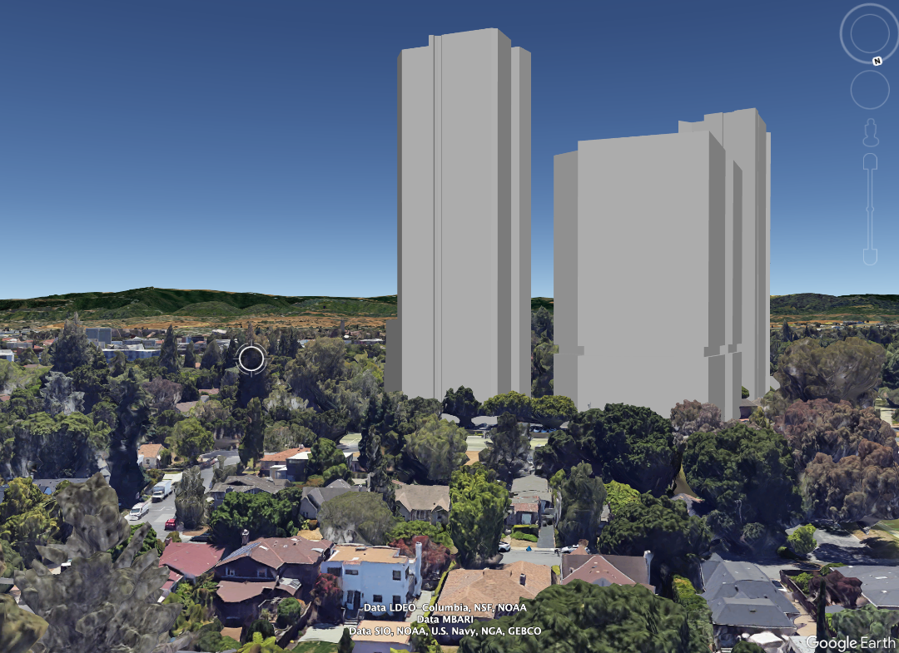

Image submitted to the City of Menlo Park as part of the formal application by the developer N17. ⠀⠀⠀⠀⠀⠀⠀⠀⠀⠀⠀⠀⠀⠀ ⠀⠀⠀⠀⠀⠀⠀⠀⠀⠀⠀⠀ ⠀⠀⠀⠀⠀⠀⠀⠀⠀⠀⠀⠀

View of 80 Willow Road from Blackburn Avenue. Image based on project specifications detailed in application to City of Menlo Park.
Menlo Forward is a local organization founded by residents who support Menlo Park’s state-approved housing development plan designed to significantly increase affordable housing for our diverse and growing community.
80 Willow Road
Leveraging a loophole in California’s housing laws, a mammoth project has been proposed for the former Sunset Magazine site on Willow Road in Menlo Park.
The project includes 37, 33, and 18 story skyscrapers. If constructed, the largest will become the tallest building between San Francisco and Los Angeles. This site is in a quiet, residential neighborhood.
We support responsible, mixed-use development at 80 Willow Road that aligns with Menlo Park’s approved housing development plan and provides for historic preservation.
We urge the City of Menlo Park, and state and county leaders to fight this outrageous proposal that overrides local regulations and common sense.
Providing far more business than residential space, the project is wildly out of scale for Menlo Park and will worsen the City’s housing deficit and traffic congestion. It will permanently alter the City’s quality of life and character, creating untenable traffic and safety issues for Menlo Park and the cities around us.
Join us! Together we can affect the outcome of this project and work toward a solution that benefits all and builds within our city’s approved housing plan.